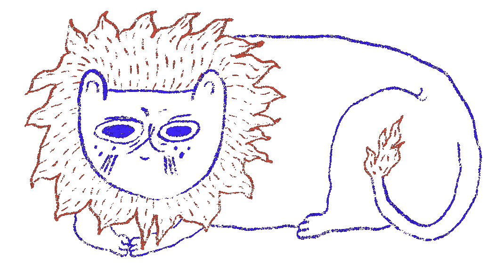

Za dnia jestem ilustratorką, graficzką (mam na to papiery*). Wieczorami muzykantką rozmiłowaną w tradycyjnej muzyce polskiej wsi.
Najwięcej inspiracji i wglądów czerpię z przyrody, lasu. Interesuje mnie ziołolecznictwo, etnobotanika, tworzenie własnych naturalnych pigmentów, które potem wykorzystuję w malarstwie czy barwieniu tkanin. Fascynuje mnie sztuka ludowa i rzemiosło. I koty.
Wczesną wiosną 2026 przeprowadziłam się na wieś, gdzie współtworzę regeneratywny, bioróżnorodny ekosystem. Zakładam rabaty naturalistyczne, łąki, staram się działać i prowadzić ogród i pracownię artystyczną w duchu permakultury. Bardzo przemawia do mnie bioróżnorodność. Pewnie stąd tyle zainteresowań i możliwych kierunków współpracy.
Chętnie podejmę się stworzenia ilustracji książkowych, okładek, plakatów, jak i malowania mebli, tkanin, szycia pokrowców na instrumenty, czy innych mniej lub bardziej oczywistych zleceń.
*licencjat z grafiki warsztatowej na Uniwersytecie Artystycznym im. Magdaleny Abakanowicz w Poznaniu, magisterka z ilustracji na Edinburgh College of Art